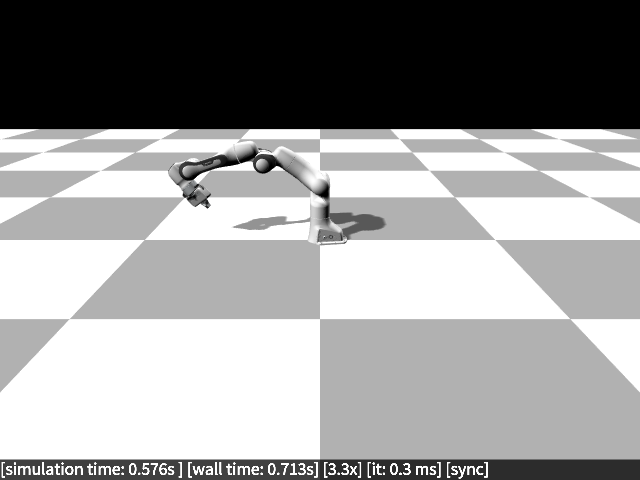

Supported robots¶
Every robot is a defined as a URDF, which will be installed $PREFIX/shared/robot_dart/robots. Some robots (Talos, iCub) have pre-defined "robot classes" that define sensors and other properties; for the other robot, you will have to add the sensors/properties via the generic robot class.
The URDF files are loaded using the following rules (see Robot::_get_path()):
- First check in the current directory
- If not found, check in
current_directory/robots - If not found, check in
$ROBOT_DART_PATH/robots - If not found, check in the robot dart installation path/robots (e.g.,
/usr/share/robot_dart/robotsor$HOME/share/robot_dart/robots) - Otherwise, report failure
Talos (PAL Robotics)¶

Talos is a humanoid robot made by PAL Robotics.
- Datasheet: [pdf]
- 32 degrees of freedom (6 for each leg, 7 for each arm, 2 for the waist, 2 for the neck, 1 for each gripper)
- 175 cm / 95 kg
- IMU in the torso
- Torque sensors in all joints except head, wrist and gripper (22 torque sensors total)
- 1 force/torque sensor in each ankle
- 1 force/torque sensor in each wrist
We have two URDF files:
-
robots/talos/talos.urdf:- accurate (simplified but made of polygons) collision meshes
- mimic joints for the gripper
- Not compatible the DART collision detector (you need to use FCL collision detector - shipped with DART)
- URDF: [talos.urdf]
- Example: [talos.cpp]
-
robot/talos/talos_fast.urdf:- no collision except for the feet, which are approximated by boxes
- grippers are fixed (no movement is allowed)
- compatible with the DART collision detector
- URDF: [talos_fast.urdf]
- Example: [talos_fast.cpp]
talos_fast.urdf is faster because it makes it possible to use the DART collision detector (and has much collision shapes). You should prefer it except if you want to use the grippers (e.g., for manipulation) or are working on self-collisions.
Please note that the mesh files (.glb) require assimp 5.x (and not assimp4.x usually shipped with ROS). If you cannot load the URDF, please check your assimp version.
Panda (Franka Emika)¶

The Franka is a modern manipulator made by Franka Emika Panda. It is commonly found in many robotics labs.
- Datasheet: [pdf]
- 7 degrees of freedom
- Can be controlled in torque
- 18 kg
- workspace: 855 mm (horizontal), 1190 mm (vertical)
- URDF: [franka.urdf]
- Example: [franka.cpp] The URDF includes the gripper.
Example
LBR iiwa (KUKA)¶

The LBR iiwa is manufactured by KUKA. It is similar to the Panda and is also very common in robotics labs.
- Datasheet: [pdf]
- We implement the 14 kg version
- 29.5 kg
- 7 degrees of freedom
- URDF: [iiwa.urdf]
- Example: [iiwa.cpp]
iCub (IIT)¶

The iCub is a open source humanoid robot made by the Instituto Italiano di Tecnologia. There are currently 42 iCUbs in the world, and many versions.
- Datasheet (rev 2.3) [pdf]
- 6 force/torque sensors (upper arms, upper legs, ankles)
- IMU in the head
- We do to simulate the skin
- We do not simulate the hands
- Our model is close to the Inria's iCub, but it has not been checked in detail.
- URDF: [icub.urdf]
- Example [icub.cpp]
Please note that the mesh files (.glb) require assimp 5.x (and not assimp4.x usually shipped with ROS). If you cannot load the URDF, please check your assimp version.
Unitree A1¶

A1 is a quadruped robot made by the Unitree Robotics.
- Depth camera in the head
- IMU in the torso
- We do not simulate the foot pressure sensors
- URDF: [a1.urdf]
- Example [a1.cpp]
Please note that the mesh files (.glb) require assimp 5.x (and not assimp4.x usually shipped with ROS). If you cannot load the URDF, please check your assimp version.
Dynamixel-based hexapod robot (Inria and others)¶

This hexapod is a simple 6-legged robot based on dynamixel actuators. It is similar to the robot used in the paper `Robots that can adapt like animals' (Cully et al., 2015).
- 6 legs, 3 degrees of freedom for each leg (18 degrees of freedom)
- simple URDF (no meshes)
- URDF: [pexod.urdf]
- Example: [hexapod.cpp]
Simple arm¶

- A simple arm for educational or debugging purposes
- 5 degrees of freedom
- simple URDF (no meshes)
- URDF: [arm.urdf]
- Example: [arm.cpp]
Loading Custom Robots¶
RobotDART gives you the ability to load custom robots that are defined in URDF, SDF, SKEL or MJCF files. For example, you can load a urdf model using:
You can also import packages (e.g. STL, DAE meshes) for your robot: